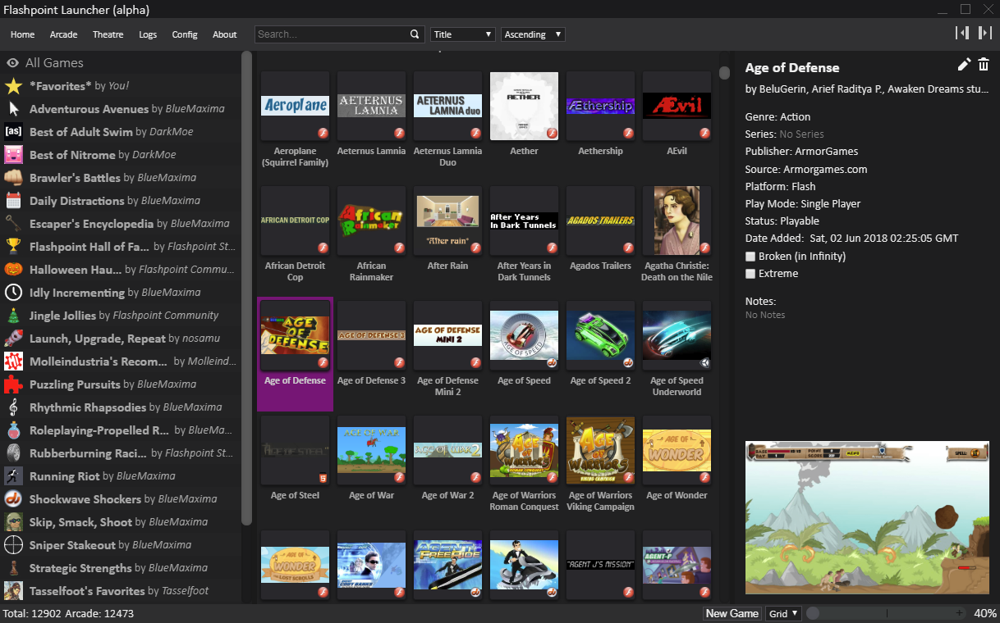

Bluemaxima's Flashpoint

With the flash player becoming a legacy technology, most browsers are seeking
to remove flash altogether by the end of 2020. the Flashpoint project
was created to conserve the thousands of beloved classic games, animations, and simulations
that made up much of the early internet, compiling all of them into on playlists
and genres.
There are two versions of the download, a full archive link which is over 200 GB
or a slightly limited version which downloads the content as you use them, both are free.
Project is ongoing and likely the download-as-you-go will probably recieve more support
and functionality with time.